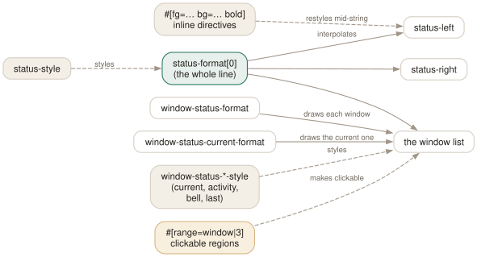

Day 10
The status line
Styles, ranges, alerts — and a status line that is yours.
By the end of today you can
- take the status line apart into its five configurable pieces and rebuild it
- write styles confidently: colours, attributes, alignment, and inline #[…] directives
- make windows tell you when something happened in them while you were elsewhere
Five pieces and a format
The status line looks like a fixed widget and is not. It is a format string in the status-format option, which interpolates the pieces you actually configure: a left segment, a window list, a right segment, and the styles for each.
Read the default before you replace it — tmux show -g status-format — and you will see the assembly, including markers like list=on and range=window|… that make the list scroll sensibly and respond to clicks. You almost never need to edit that option; you need to know it exists so that the others make sense.

tmux show -g status-format) shows you exactly how the parts are assembled, including the list=on and range= markers that make the window list clickable.The two-column trap
Before anything else: status-left-length defaults to 10 and status-right-length to 40. Anything longer is silently cut. This is the cause of most “my status line config does nothing” reports, and it produces no error at all.
$ tmux set -g status-left-length 40
$ tmux set -g status-right-length 60
Styles
A style is a comma- or space-separated list of terms, used both as option values (status-style) and inline inside formats (#[…]).
fg=colour bg=colour us=colour -- foreground, background, underscore
colour names: black red green yellow blue magenta cyan white
brightred … colour0..colour255 #1e1e1e default terminal
bold (bright) dim italics underscore blink reverse hidden strikethrough
overline double-underscore curly-underscore dotted-underscore dashed-underscore
prefix any of them with 'no' to turn it off; 'none' clears everything
align=left|centre|right fill=colour width=N
push-default / pop-default -- redefine what #[default] means for a stretch
range=window|3 range=pane|%7 range=user|tag -- clickable regions
Inline directives change the style from that point on; #[default] returns to the option's base style. So a segment is usually a sandwich:
set -g status-left "#[fg=black,bg=green,bold] #S #[default] "
Building one
Here is the target, and then the pieces:
$ cargo test
Compiling api v0.4.0
Left is the session name in reverse video — the one piece of state that is otherwise invisible. The window list is plain except for the current window, which is inverted, and window 3 carries a # because something printed there while you were away. Right is the pane title and the clock, with a PREFIX badge that appears while tmux is waiting for the second half of a key.
That last one is worth stealing whatever else you do. #{?client_prefix,…,…} removes an entire category of confusion — the “did my prefix register?” pause that everybody does silently several times a day.
Alerts: making windows speak up
Three kinds of monitoring, each a window option, each producing a flag in the list:
monitor-activity- any output at all. Flag
#. Useful, and noisy if a window is tailing a log. monitor-bell- the program rang the terminal bell. Flag
!. This is what a shell does when a long command finishes, if you configure it to. monitor-silence 30- no output for 30 seconds. Flag
~. The one for “tell me when this build stops printing”.
Each has an action (activity-action, bell-action, silence-action) taking any, none, current or other — with other meaning “ignore whatever is happening in the window I am looking at”, which is nearly always what you want. And each has a visual- option controlling whether you also get a message across the status line.
C-bM-n and C-bM-p jump to the next and previous window carrying an alert. With monitoring on and those two keys, “start a build, go and do something else, come back when it says so” stops needing a second terminal.
It is clickable, too
With the mouse on, clicking a window in the list selects it, and right-clicking opens a menu. Those are root-table bindings (MouseDown1Status, MouseDown3Status) using the target {mouse}, and they work because the default window list marks each entry with #[range=window|…].
If you write your own window-status-format you keep that behaviour for free — tmux inserts the ranges around the list. Adding range=user|something to your own segments lets you build custom clickable regions, read back in the binding as #{mouse_status_range}. Day 13 hangs a menu off one.
New vocabulary
Keys
| Key | Does |
|---|---|
| C-bM-n | Go to the next window with an alert. |
| C-bM-p | Go to the previous window with an alert. |
| C-bt | The clock — which is really clock-mode, styled by clock-mode-colour. |
Commands
| Command | Does |
|---|---|
refresh-client -S | Redraw the status line right now. |
show-options -g status-format | Read the default status line's own definition. |
display-menu -T title name key cmd | Pop up a menu — what the status line's mouse bindings use. |
Options
| Option | Does |
|---|---|
status | off, on, or 2–5 for a taller status line. |
status-position | top or bottom. |
status-style | The base style for the whole line. |
status-left | The left segment. A format. Truncated to 10 columns by default. |
status-left-length | How wide the left segment may be. Raise it before anything else. |
status-right | The right segment. Also a format, also length-limited (40). |
status-justify | Where the window list sits: left, centre, right, absolute-centre. |
status-interval | Seconds between redraws. 15 by default; matters if you use #(). |
window-status-format | How each window is drawn in the list. |
window-status-current-format | How the current one is drawn. |
window-status-separator | What goes between them. A space by default. |
window-status-style | Style for a window entry; -current-, -activity-, -bell-, -last- variants exist. |
monitor-activity | Flag windows where output appeared while you were away. |
monitor-bell | Flag windows that rang the terminal bell. |
monitor-silence | Flag windows that have been quiet for N seconds. |
visual-activity | Show a message instead of (or as well as) ringing the bell. |
activity-action | any / none / current / other — which windows count. |
Today's configappend to ~/.tmux.conf
Put the status line at the top. Your shell prompt lives at the bottom of the screen, which is exactly where your eyes already are - so the status line competes with it there and is ignored. At the top it is where a title bar would be.
set -g status-position top
set -g status-justify left
set -g status-interval 5
A quiet base: no background of its own, so it borrows the terminal's.
set -g status-style "bg=default,fg=colour245"
Left: the session name, which is the one piece of state you cannot get any other way. Raise the length limit first - it defaults to 10 columns and silently truncates.
set -g status-left-length 40
set -g status-left "#[fg=black,bg=green,bold] #S #[default] "
Right: a PREFIX indicator (so a half-pressed prefix is never a mystery), the pane title, and the clock. Note the escaped commas inside the #[...] directive.
set -g status-right-length 60
set -g status-right "#{?client_prefix,#[fg=black#,bg=yellow#,bold] PREFIX #[default] ,}\
#[fg=colour245] #{=/20/…:pane_title} %H:%M "
The window list. The current window is inverted; the others are quiet. The zoom flag is spelled out because Z among the other flag characters is easy to miss.
set -wg window-status-format " #I:#W#{?window_flags,#{window_flags}, } "
set -wg window-status-current-format "#[fg=black,bg=colour250,bold] #I:#W#{?window_zoomed_flag, Z,} "
set -wg window-status-separator ""
Tell me when something happened in a window I was not looking at, but do not interrupt me with a message about it - the flag in the status line is enough. C-b M-n jumps to the next flagged window.
set -wg monitor-activity on
set -g visual-activity off
set -g activity-action other
set -wg monitor-bell on
set -wg window-status-activity-style "fg=yellow,bold"
set -wg window-status-bell-style "fg=red,bold"
Reload with tmux source-file ~/.tmux.conf and watch for errors in the status line.
Drillsdo these in a real terminal, today
Self-check
Answer out loud first, then unfold.
Your status-left is being cut off. Why, and where is the setting?
status-left-length defaults to 10 — enough for the default [#S] and nothing else. status-right-length defaults to 40. These two are the most common cause of “my status line configuration does not work”, and neither produces an error.
What is the difference between status-style and a #[…] directive?
status-style sets the base style for the whole line. #[…] is an inline directive inside a format that changes the style from that point onwards. #[default] returns to the base. There is also #[push-default] / #[pop-default], which redefine what “default” means for a stretch — that is how the built-in status line lets a window-status format inherit the right colours in the middle of the line.
You set monitor-activity on and now every window is permanently flagged. What went wrong?
Something in those windows is producing output constantly — a log tail, a progress spinner, a clock. Activity monitoring means literally “bytes arrived”. Use activity-action to narrow which windows count, turn monitoring off for the noisy windows specifically (set -w monitor-activity off in that window), or switch to monitor-bell, which only fires when a program deliberately rings.
What is a range= style directive for?
It marks a stretch of the status line as clickable. #[range=window|3] tells tmux that this text stands for window 3, so a click there fires the Status mouse key with that window as the target. It is how the default window list responds to clicks, and how a custom status line keeps that behaviour. range=user|X gives you an arbitrary tag, readable from the binding as #{mouse_status_range}.
Cheat sheet
status-left-length 40 status-right-length 60 # DO THIS FIRST (10 / 40 by default)
status-position top|bottom status-justify left|centre|right status-interval 5
status-style / window-status-style / -current-style / -activity-style / -bell-style
window-status-format / -current-format / window-status-separator
#[fg=red,bg=black,bold] … #[default] # inline; escape commas as #, in a #{?}
#{?client_prefix,PREFIX,} # the badge worth having
#[range=window|3] … #[norange] # clickable regions
monitor-activity / monitor-bell / monitor-silence N -> flags # ! ~
activity-action other visual-activity off
C-b M-n / C-b M-p # jump to the next / previous alert
Everything through Day 10
Keys
| Key | Does |
|---|---|
| C-bd | Detach this client. The session keeps running. |
| C-b$ | Rename the current session. |
| C-b? | List every key binding. q to leave. |
| C-b: | Open the tmux command prompt. |
| C-bt | Show a clock — a harmless way to prove the prefix works. |
| C-bC-b | Send a literal C-b to the program in the pane. |
| C-bc | Create a window at the lowest free index. |
| C-b, | Rename the current window — and pin the name. |
| C-bn | Next window by index. |
| C-bp | Previous window by index. |
| C-bl | Back to the last window you were in. The one to actually learn. |
| C-b0 | Jump straight to window 0 (likewise 1 … 9). |
| C-b' | Prompt for a window index — for windows above 9. |
| C-bw | Choose a window from an interactive tree with previews. |
| C-b& | Kill the current window, after a confirmation. |
| C-b. | Move the current window to a different index. |
| C-bi | Flash some information about the current window. |
| C-b% | Split left/right. The |-shaped key gives you a |-shaped border. |
| C-b" | Split top/bottom. |
| C-bLeft | Move to the pane to the left (likewise Right, Up, Down). |
| C-bo | Next pane in creation order. |
| C-b; | The previously active pane — the C-bl of panes. |
| C-bq | Flash the pane numbers; press a digit while they show to jump there. |
| C-bz | Zoom: this pane fills the window. Press again to restore. |
| C-bx | Kill this pane, after a confirmation. |
| C-bSpace | Cycle to the next preset layout. |
| C-bM-1 | even-horizontal — side by side in a row. |
| C-bM-2 | even-vertical — stacked in a column. |
| C-bM-3 | main-horizontal — one big pane on top. |
| C-bM-4 | main-vertical — one big pane on the left. |
| C-bM-5 | tiled — a grid. |
| C-bE | Spread the current pane and its neighbours out evenly. |
| C-bC-Left | Resize by one cell (hold to repeat). M-Left does five. |
| C-b{ | Swap this pane with the previous one; C-b} with the next. |
| C-bC-o | Rotate every pane through the layout; C-bM-o rotates back. |
| C-b* | Open a floating pane over the window — hovers above the layout. |
| C-b[ | Enter copy mode at the bottom of the history. |
| C-bPageUp | Enter copy mode already scrolled one page up. |
| C-b] | Paste the most recent buffer into this pane. |
| C-b= | Choose which buffer to paste, from a list with previews. |
| C-b# | List the paste buffers. |
| C-b- | Delete the most recent buffer. |
| q | In copy mode: leave. (Escape in emacs mode.) |
| /? | vi mode: search forward / backward; n and N repeat. |
| C-sC-r | emacs mode: incremental search forward / backward. |
| Space | vi mode: start a selection. C-Space in emacs mode. |
| v | vi mode: toggle rectangle (block) selection. R in emacs mode. |
| Enter | vi mode: copy the selection and leave. M-w in emacs mode. |
| gG | vi mode: top / bottom of the history. |
| C-bC | Customize mode: browse and change every option and key, with descriptions. |
| C-bR | Reload ~/.tmux.conf — after you add today's binding. |
| C-bs | Choose a session from the tree — with previews, tagging and filtering. |
| C-b( | Switch this client to the previous session. |
| C-b) | Switch this client to the next session. |
| C-bL | Switch back to the last session. The C-bl of sessions. |
| C-bD | Choose a client from a list and detach it. |
| C-b$ | Rename the current session. |
| C-b/ | Describe a key: press it and tmux tells you what it is bound to. |
| C-b? | List every binding in every table — really list-keys -N. |
| C-bM-n | Go to the next window with an alert. |
| C-bM-p | Go to the previous window with an alert. |
| C-bt | The clock — which is really clock-mode, styled by clock-mode-colour. |
Commands
| Command | Does |
|---|---|
tmux | Start the server if needed and create a session, attached. |
tmux new -s work | Create a session named work. |
tmux new -A -s work | Attach to work, creating it only if absent. |
tmux ls | List sessions on this server. Alias for list-sessions. |
tmux attach -t work | Attach this terminal to work. |
tmux attach -d -t work | Attach, detaching any other client first. |
tmux detach | Detach the current client, from inside or by target. |
tmux rename-session api | Rename the current session. |
tmux kill-session -t work | Destroy a session and everything in it. |
tmux kill-server | Destroy every session. The nuclear option. |
new-window | Create a window. Alias neww. |
new-window -n logs | Create it with a fixed name. |
new-window -c ~/src/api | Create it with that working directory. |
new-window -d | Create it but do not switch to it. |
new-window -a -t 2 | Insert after window 2, shifting the rest along. |
rename-window api | Rename the current window. |
select-window -t :3 | Switch to window 3 of the current session. |
last-window | Switch to the previously current window. |
kill-window -t :logs | Kill a window by name. |
list-windows | List windows in the session. Alias lsw. |
choose-tree -w | The interactive picker behind C-bw. |
split-window -h | Split left/right. Alias splitw. |
split-window -v | Split top/bottom. The default if neither is given. |
split-window -c ~/src | Start the new pane in that directory. |
split-window -l 30% | Give the new pane 30% of the space (-l 20 for cells). |
split-window -b | Put the new pane before — above or to the left of — the old one. |
split-window -f -h | Split the full window height, not just the current pane. |
select-pane -L | Move to the pane on the left (-R -U -D likewise). |
select-pane -t 2 | Move to pane 2 of this window. |
last-pane | Back to the previously active pane. |
resize-pane -Z | Toggle zoom. |
resize-pane -x 100 -y 30 | Resize to an absolute size, cells or %. |
select-layout tiled | Apply a named layout. |
select-layout -E | Spread evenly (what C-bE runs). |
select-layout -o | Undo the most recent layout change. |
list-panes | List panes with index, size and command. Alias lsp. |
kill-pane -a | Kill every pane except this one. |
swap-pane -D | Swap with the next pane, keeping focus behaviour sane. |
copy-mode | Enter copy mode; -u starts a page up, -e exits at the bottom. |
send-keys -X begin-selection | How every copy-mode key is implemented. -X means “to the mode”. |
list-buffers | Show the buffer stack. Alias lsb. |
set-buffer "text" | Put a literal string into a buffer from a script. |
load-buffer file | Read a file into a buffer (- for stdin). |
save-buffer file | Write a buffer out to a file (- for stdout). |
show-buffer | Print the newest buffer. |
paste-buffer -t :1.0 | Paste into a specific pane, not necessarily this one. |
delete-buffer -b name | Remove one buffer. |
capture-pane -p -S -3000 | Dump the last 3000 lines of history to stdout. |
clear-history | Throw away a pane's scrollback. Alias clearhist. |
set-option -g name value | Set a global session option. Alias set. |
set-option -w name value | Set a window option (for the current window). |
set-option -p name value | Set a pane option (for the current pane). |
set-option -s name value | Set a server option. |
set-option -u name | Unset, so the value is inherited again. |
set-option -a name value | Append to a string or style option instead of replacing it. |
show-options -g | Show global session options. Alias show. |
show-options -A | Show them including inherited values, marked with *. |
show-options -gv history-limit | Print just the value of one option. |
source-file ~/.tmux.conf | Run a file of tmux commands now. Alias source. |
customize-mode | The interactive option browser behind C-bC. |
new-session -d -s api | Create a session in the background and stay where you are. |
new-session -A -s api | Attach if it exists, create if it does not. |
new-session -c ~/src/api -s api | Create with a starting directory. |
switch-client -t api | Move this client to another session, without detaching. |
switch-client -l | Back to the previous session. |
has-session -t api | Exit 0 if it exists. The if in every wrapper script. |
attach-session -d -t api | Attach here and detach whoever else was looking. |
list-clients | Which terminals are attached to what. Alias lsc. |
detach-client -s api | Detach every client from that session. |
kill-session -a | Kill every session except the current one. |
choose-tree -Zs | The session picker behind C-bs. |
tmux neww \; splitw -h | Two commands in one invocation. Note the escaped semicolon. |
display-message -p '#{pane_id}' | Print a value to stdout instead of the status line. |
list-panes -a | Every pane on the server, not just this window. |
list-windows -a | Every window on the server. |
list-sessions -F '#{session_name}' | One field per line — the shape scripts want. |
list-commands | Every command tmux knows, with its synopsis. Alias lscm. |
list-commands neww | The synopsis for one command. |
bind-key c new-window | Bind in the prefix table. Alias bind. |
bind-key -n M-Left select-pane -L | Bind without a prefix (-n = -T root). |
bind-key -r H resize-pane -L | Repeatable: keep tapping without re-pressing the prefix. |
bind-key -N "note" x cmd | Attach a note, shown by C-b?. |
bind-key -T mytable g cmd | Bind in a table of your own. |
unbind-key -T prefix x | Remove a binding. Alias unbind. |
list-keys -T copy-mode-vi | Read a whole mode as data. Alias lsk. |
list-keys -N | Only keys with notes, in a readable form. |
send-keys -X copy-selection | Send a command into a mode. |
send-prefix | Pass the prefix key through to the program. |
switch-client -T mytable | Make the next key be looked up in another table. |
display-message -p '#{…}' | Evaluate a format and print it. The echo of tmux. |
display-message -a | List every format variable with its current value. |
display-message -v '#{…}' | Show how the format is parsed, step by step. |
list-panes -f '#{…}' | Filter a listing by a format that evaluates true. |
if-shell -F '#{…}' cmd | Run a command when a format is non-empty and non-zero. |
set-option -F name '#{…}' | Expand the format now and store the result. |
refresh-client -S | Redraw the status line right now. |
show-options -g status-format | Read the default status line's own definition. |
display-menu -T title name key cmd | Pop up a menu — what the status line's mouse bindings use. |
Options
| Option | Does |
|---|---|
automatic-rename | Window renames itself after the running command. On by default. |
automatic-rename-format | The format used when it does. Defaults to the pane's command. |
allow-rename | Whether a program in the pane may rename the window by escape sequence. |
main-pane-width | Width of the big pane in the main-vertical layouts. Accepts %. |
main-pane-height | Height of the big pane in the main-horizontal layouts. |
tiled-layout-max-columns | Cap the columns in the tiled layout; 0 means no cap. |
mode-keys | vi or emacs key bindings inside copy mode. Default emacs. |
history-limit | Lines of scrollback kept per pane. Default 2000, which is stingy. |
copy-command | Shell command that bare copy-pipe pipes to — your clipboard tool. |
set-clipboard | Whether tmux sets the terminal's clipboard with OSC 52. |
word-separators | What counts as a word boundary for w and b. |
wrap-search | Whether searches wrap around the end of the history. On by default. |
base-index | Index the first window gets. Default 0. |
pane-base-index | Index the first pane gets. Default 0. A window option. |
renumber-windows | Close the gaps in window indices when one is killed. |
escape-time | Milliseconds tmux waits to decide whether Escape began a key sequence. |
focus-events | Pass terminal focus in/out through to the programs in panes. |
display-time | How long status line messages stay up. 750 ms by default. |
default-terminal | The $TERM new panes get. Must be a screen/tmux derivative. |
detach-on-destroy | What a client does when its session dies. off moves it to another session instead. |
destroy-unattached | Destroy a session once the last client leaves. Off by default, and rightly. |
default-size | Size for sessions created detached, when no client dictates one. |
window-size | Whether a window sizes to the largest, smallest or latest attached client. |
aggressive-resize | Size each window to the clients actually viewing it, not the whole session. |
command-alias | Server option: an array of your own command aliases. |
prefix | The prefix key. None disables it entirely. |
prefix2 | A second prefix key, for when you want both C-b and C-a. |
repeat-time | Milliseconds the prefix stays live after a -r key. Default 500. |
initial-repeat-time | The same, for the first press of a repeat sequence. |
key-table | Which table a client starts in. The lever behind modal setups. |
pane-border-format | What is drawn on a pane's border line. |
pane-border-status | Where that line goes: off, top, bottom. |
automatic-rename-format | The format used to rename windows automatically. |
status | off, on, or 2–5 for a taller status line. |
status-position | top or bottom. |
status-style | The base style for the whole line. |
status-left | The left segment. A format. Truncated to 10 columns by default. |
status-left-length | How wide the left segment may be. Raise it before anything else. |
status-right | The right segment. Also a format, also length-limited (40). |
status-justify | Where the window list sits: left, centre, right, absolute-centre. |
status-interval | Seconds between redraws. 15 by default; matters if you use #(). |
window-status-format | How each window is drawn in the list. |
window-status-current-format | How the current one is drawn. |
window-status-separator | What goes between them. A space by default. |
window-status-style | Style for a window entry; -current-, -activity-, -bell-, -last- variants exist. |
monitor-activity | Flag windows where output appeared while you were away. |
monitor-bell | Flag windows that rang the terminal bell. |
monitor-silence | Flag windows that have been quiet for N seconds. |
visual-activity | Show a message instead of (or as well as) ringing the bell. |
activity-action | any / none / current / other — which windows count. |